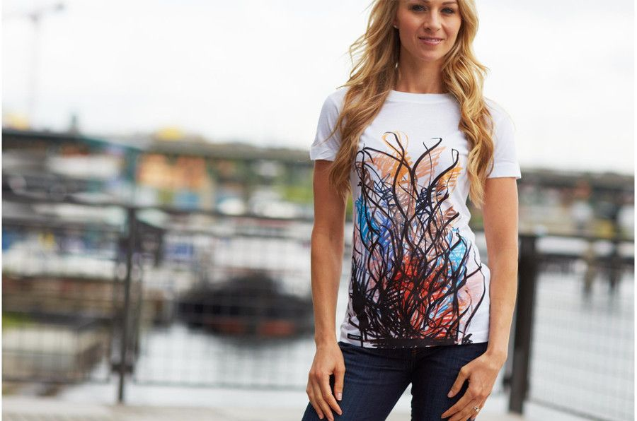

Kim jesteśmy i czym jest druk sublimacyjny?
 Jesteśmy firmą zajmującą się drukiem sublimacyjnym na materiale. Zadrukowujemy całe belki wzorami klienta lub wspólnie ustalonymi. Istnieje również możliwość wydruku podglądów oraz druku kilku różnych wzorów na jednej belce.
Proces sublimacji polega na wykonaniu wysokiej rozdzielczości druku cyfrowego atramentami sublimacyjnymi na specjalnym papierze transferowym. Otrzymany wydruk zostaje następnie przeniesiony na wybrany materiał przy pomocy wysokich temperatur, które zapewniają mu wysoką kontrastowość kolorów oraz trwałość.
Oferujemy również sprzedaż materiałów oraz dodatków krawieckich, doradztwo i pomoc w przygotowaniu wzoru do wydruku oraz pikowanie zadrukowanego materiału metodą bezszwową.